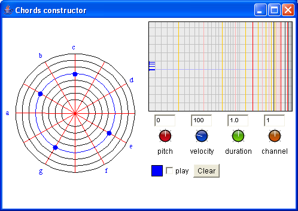

The chord constructor allows to build basic musical objects like notes, rest and chords. The circles represent octaves and the lines represent degrees within an octave. The current chord pitch, velocity, duration and channel can be adjusted: you can set them by vertically moving the mouse on the rotative buttons, and precise them by pressing Ctrl. The result is available in the right box.
To create a rest object, you just have to drag an "empty object" (without any note) from the result box. A rest will be created with the current duration value.